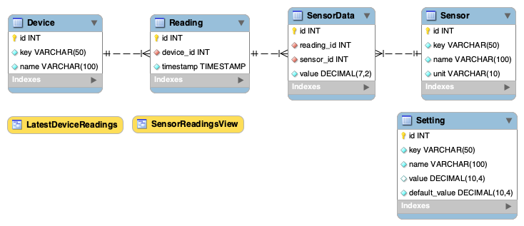

Learning journal
8th March
Database Schema Changes
Replaced ENUM with a sensor Table
sensor_category was a fixed ENUM and was changed to its own table sensor with id, key, name, and unit, allowing dynamic sensor types without modifying the schema.
Added key for Lookups
Previously, only id was used for reference. Now, a key column in device, sensor, and setting enables human-friendly lookups, making queries easier and cleaner.
Replaced sensor_type with sensor_id
sensor_type was a VARCHAR(50), now replaced with sensor_id as a foreign key to sensor, ensuring consistency and preventing invalid entries.
Improved setting Table
Added setting table with key, value, and default_value, allowing customization with fallback defaults.
Better Indexing
Indexes added on key, device_id, and sensor_id for faster queries.
Concept EER (draw.io)
Old EER
New EER

26th February
After drafting the concept, I'll request feedback on the following:
User & User Stories
- Is the scope definition clear and comprehensive?
- Are Personas sufficient for defining users?
Main Goal
- I aimed for a less technical goal, aligning it with the user stories and their needs. Does this approach work?
Product Requirements
- I've broken them down into different technical aspects and defined SMART goals for each. Is this structure effective?
Sketches
- I'll share sketches once I begin designing and sketching the hardware. Should this assignment be categorized under Physical Sketches?
14th February
Concept Development: Pepper’s Ghost Hologram & Weather AI Integration
The idea is to use Pepper’s Ghost to create a floating holographic visualization inside the Breathing Light Form installation. The goal is to represent real-time weather conditions dynamically using AI-generated transitions between different atmospheric states like sunny, cloudy, and rainy.
- The LCD display will be placed inside the base, projecting visuals onto an angled transparent acrylic sheet.
- AI-generated animations will allow smooth transitions between weather states, making the illusion more immersive.
- The hologram should feel alive, responding dynamically to real-time weather data from sensors.
LED-Based Atmospheric Feedback
To complement the hologram, Neopixel LEDs will be used to represent temperature, humidity, and pressure:
- Temperature → Color Changes
- Cold: Blue
- Warm: Orange
- Hot: Red
- Humidity → Light Intensity
- High humidity: Dimmed light (mimicking fog).
- Low humidity: Brighter glow (clear atmosphere).
- Air Pressure → Pulsation Effect
- Low pressure: Slow breathing pulses.
- High pressure: Sharp flickering effects.
The LEDs should create an immersive ambient effect that surrounds the holographic display.
Soundscape Integration
A small speaker system will add generative audio layers that reflect the weather conditions:
- Wind → Whispering breeze sounds.
- Rain → Soft water droplets.
- Storms → Distant thunder rumbles.
The sound should be subtle but add depth to the experience, making it more engaging.
Environmental Data Processing & API Handling
The embedded system will retrieve real-time weather data from multiple Arduinos placed in different locations:
- Main microcontroller (ESP32/Arduino Uno) will collect data.
- An API will process and send temperature, humidity, wind speed, and pressure data.
- The hologram, LEDs, and sound system will react dynamically based on these readings.
Website Purpose & Functionality
The website serves as the interactive hub for the Breathing Light Form installation, providing users with real-time weather data, historical trends, and control over the device. It acts as both a visual dashboard and a remote interface for interacting with the installation.
Core Features
Live Weather Data Visualization
- Displays real-time weather information (temperature, humidity, pressure, wind speed) collected from multiple Arduino sensors.
- Uses interactive charts & animations to showcase data changes dynamically.
AI-Generated Weather Hologram Control
- Users can remotely switch between forecast modes to preview upcoming weather changes.
- Sends commands to the Pepper’s Ghost holographic display to alter the visualized weather conditions inside the installation.
- Allows customization of animation speed, transitions, or themes.
LED & Sound Synchronization Controls
- Users can adjust LED intensity, color settings, and pulsing effects for a more personalized experience.
- Soundscapes can be toggled or adjusted in volume, allowing users to choose between ambient modes (stormy, calm, windy, etc.).
Historical Data & Forecasting
- Stores weather data from previous days and provides trend visualizations.
- Allows comparisons between current conditions and past weather patterns.
User Interaction & Customization
- Touch & Gesture Control: If integrated with sensors, the website could map gestures to changes in the holographic display.
- Customization Panel: Users can tweak light effects, sound intensity, and display preferences.
- Future expansion: Possible AR/WebXR integration to allow users to see holographic weather overlays via their phone or VR.

13th February
Frontend Implementation
The frontend is currently being served using Vite, which handles SCSS and JavaScript with hot-reload enabled on port :5173 while Docker is running. This setup allows for quick iteration and development without needing to restart the server each time changes are made. The next step will be to organize the project files into a src or dev folder to improve workflow efficiency, keeping the development environment separated from Docker.
Backend and Database
The backend follows an MVC controller-model architecture, which is designed for clarity and scalability. With feedback from Mats, I’ve received approval for the concept and further suggestions for future optimization. Notably, Mats recommended utilizing arrays to simplify handling the request data and also suggested exploring Laravel for better object-oriented practices, especially around routing, to enhance maintainability.
Next Steps
Next, I plan to refine the backend structure based on the feedback received and begin integrating more sophisticated routing mechanisms. Additionally, I will continue optimizing the frontend by further modularizing the project and ensuring smooth communication between the frontend and backend as the project evolves.
the same night...
Frontend & Vite Integration
Vite is now correctly bound to 0.0.0.0, making it accessible within Docker.
dev.localhostproxies frontend requests toiot-vite:5173, resolving previous accessibility issues.- Project structure now separates:
web/src/frontend/→ Development source (served via Vite).web/build/frontend/→ Production build (served via Nginx).
This ensures that development and production environments remain distinct, preventing unnecessary rebuilds during local development.
Backend Isolation & API Handling
A separation between production and development environments has been established by introducing distinct PHP instances:
iot-php(production) → Servesweb/build/underlocalhost.iot-php-dev(development) → Usesweb/src/api/underdev.localhost.
Nginx is now configured to correctly proxy API requests on dev.localhost/api/ to iot-php-dev, ensuring development changes do not interfere with production.
Environment Variable Management (.env)
Hardcoded database credentials have been replaced with environment variables. Configuration files are now stored under:
env/production/.env→ Used insideiot-php.env/development/.env→ Used insideiot-php-dev.
The Database.php class dynamically retrieves database credentials using getenv(), ensuring environment-specific settings are correctly applied.
Database Management
A single MariaDB instance is used for both environments, with separate databases:
iot(Production)iot_dev(Development)
PhpMyAdmin remains unchanged but allows switching between databases, maintaining environment separation.
Next Steps
- Explore automated deployment options for the front and backend
12th February
Frontend Implementation
The frontend has been set up using simple HTML and JavaScript, with Chart.js integrated to visualize data dynamically. AJAX is utilized to fetch and update data in real time, ensuring smooth visualization updates. A basic form has also been implemented to send temperature data to the database.
Backend and Database
A database has been structured and initially populated with simple measurement data. The backend is powered by PHP, which processes POST and GET requests using an action parameter to handle data submission and retrieval efficiently. The current implementation focuses on core functionality, with design considerations set aside for later development.
Next Steps
The upcoming phase involves connecting an Arduino to the system, enabling real-time sensor data collection. This will allow the database to be filled with actual temperature readings, further validating the data pipeline and system reliability.
10th February 2025
Holographic Technology
Spinning LED Array
A volumetric display method that uses a rapidly rotating LED matrix or strip. The high-speed motion, combined with precise timing, creates a 3D floating image through persistence of vision (PoV). This is one of the simplest volumetric display techniques to implement.
Swept Surface Projection
This approach involves projecting cross-sections of a 3D model onto a rapidly moving transparent screen. As the screen moves, it displays successive image slices, creating the illusion of a true volumetric hologram. The Voxon VX2-XL is a commercial example of this technique.
Holographic Fan Display
A high-speed rotating LED blade that displays a 3D-like floating image in mid-air. The spinning motion, combined with precisely controlled LED lighting, creates the illusion of a hologram. This method is widely used for advertising displays.
Voxel-Based Display with Diffused Light
This technique manipulates light in a transparent medium (e.g., fog, glass, or an LED cube) to create a 3D image composed of voxels (3D pixels). It often requires laser-based projection or diffused light scattering to make each voxel visible.
Fauxlography
There are many illusions that can be used to simulate fake holographic images, providing the illusion of depth and projection without true volumetric rendering.
Pepper's Ghost (Musion Eyeliner)
A 19th-century theater illusion that uses a semi-transparent reflective surface to superimpose images into real space. This method has been used for concerts, performances, and museum exhibits.

Rotating Fans
Similar to the holographic fan display, but with multiple blades or layered LED strips to create a more complex illusion of depth.
Volumetric Displays
While not true holography, volumetric displays project 2D cross-sections into a 3D space using swept-surface projection, spinning LED arrays, or diffused light techniques.
5th February 2025
Reflecting on my experience with a Three.js project during my summer internship, I got the idea of creating a Real-Time Cloud Coverage Visualizer. The concept involves 3D-printing a physical map and finding a way to display real-world cloud data dynamically. Several approaches came to mind, including Transparent OLED Displays, Transparent LCD Displays, Holographic Fan Displays, or even projecting light onto fabric, similar to the technique used in the Circulate exhibition.
My previous project explored real-time 3D cloud visualization in a digital space, and now I want to experiment with bringing it into the physical world.
üîó Old Project: GitHub ‚Äì Real-Time 3D Cloud Coverage Visualizer

4th February 2025
To spark inspiration, I visited the Circulate – Photography Beyond Frames exhibition. The exhibit provided fascinating insights into how photographers push the boundaries of framing, exploring innovative ways to present their work beyond traditional constraints.
This experience particularly inspired me to consider holographic visualization—using data or images in a 3D space—to expand on the concept of framing in new and immersive ways.